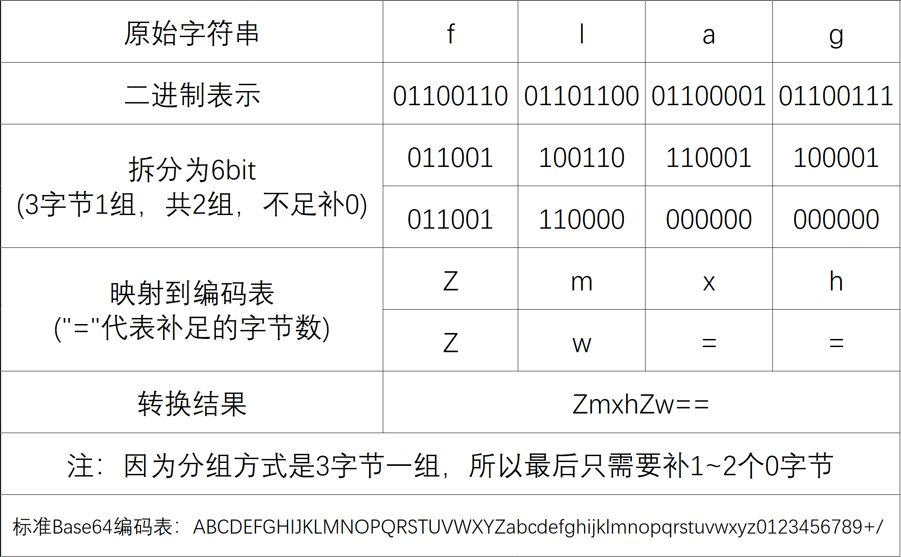
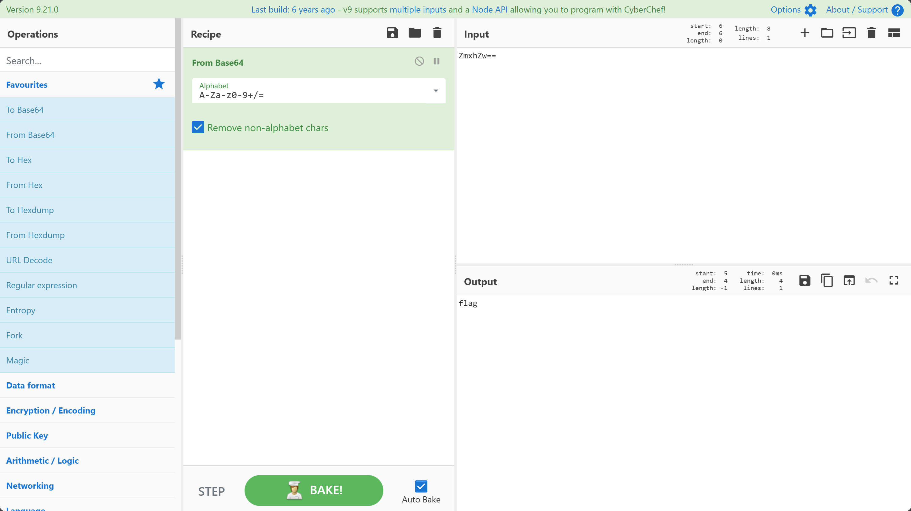
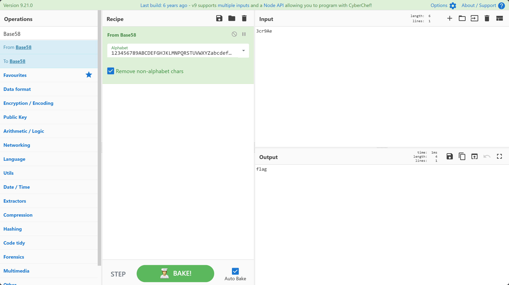
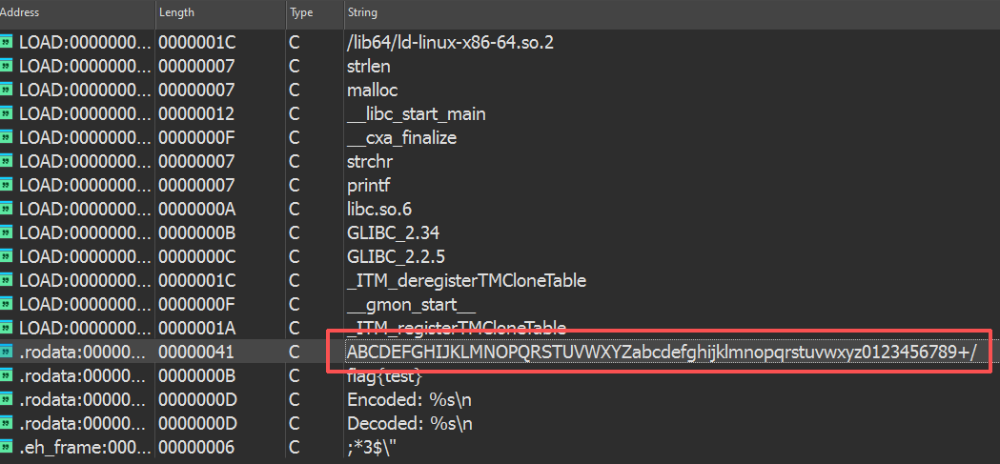
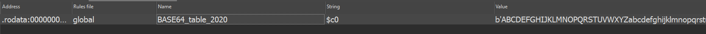

编码基础¶
由于 Reverse 方向涉及到的编码类型很多，这里只对一些较为经典的编码方式进行介绍。
Hex 编码（十六进制编码）¶
定义与原理¶
Hex 编码是将二进制数据用 16 进制数字 表示的一种编码方式。它将每个字节拆分为高4位和低4位，分别映射为一个十六进制字符。
十六进制字符有哪些？
大写版本：0123456789ABCDEF
小写版本：0123456789abcdef
设原始字节数据为 \(B = [b_0, b_1, ..., b_{n-1}]\)，每个字节 \(b_i\) 的取值范围为 \([0, 255]\)。
将每个字节拆分为高 4 位和低 4 位：
其中：
- \(h_i = \lfloor b_i / 16 \rfloor\) 为高半字节
- \(l_i = b_i \bmod 16\) 为低半字节
编码示例¶
对于字符串 "Hello" 的 ASCII 字节序列：
| 字符 | ASCII | 高4位 | 低4位 | Hex编码 |
|---|---|---|---|---|
| H | 72 | 4 | 8 | 48 |
| e | 101 | 6 | 5 | 65 |
| l | 108 | 6 | c | 6c |
| l | 108 | 6 | c | 6c |
| o | 111 | 6 | f | 6f |
最终结果：\(\text{"48656c6c6f"}\)
Unicode 编码¶
定义与数学本质¶
Unicode 常被误认为是一种编码方式，但它本质上是一个 字符集 ，只负责为每个字符分配唯一的 码点 （code point）。
至于如何将码点转换为字节，则由 UTF-8、UTF-16 等具体编码方案负责。
这一空间共可容纳约 111 万个字符位置，足以涵盖人类目前使用的所有书写系统。
常用编码方式¶
Unicode 需要通过特定的 编码方式 将目标字符串转换为字节序列，常见的有：
UTF-8（变长编码）¶
- ASCII 字符（U+0000 到 U+007F）占 1 字节
- 其他字符占 2-4 字节
- 无字节序问题
UTF-16（变长编码）¶
- BMP 字符（U+0000 到 U+FFFF）占 2 字节
- 补充平面字符占 4 字节，通过代理对（U+D800–U+DFFF）编码
- 分 UTF-16LE（小端）和 UTF-16BE（大端）
UTF-32（定长编码）¶
- 所有字符固定占 4 字节
- 分 UTF-32LE 和 UTF-32BE
常见形式识别¶
在二进制分析中，Unicode 字符串常以以下形式出现：
- UTF-8：ASCII 字符保持不变，非 ASCII 字符为多字节
- UTF-16LE：每两个字节表示一个字符，低字节在前，如
H\x00e\x00l\x00l\x00o\x00 - UTF-16BE：每两个字节表示一个字符，高字节在前，如
\x00H\x00e\x00l\x00l\x00o - UTF-32：每四个字节表示一个字符
Base 编码¶
简单来说，所有的 Base 编码本质上都是在做同一件事： 数字进制转换 。
以下是一些常见的 Base 编码：
- Base16
- Base32
- Base64
- Base36
- Base58
- Base62
- Base85
- Base91
- ...
我们可以将这些编码的转换方式大致分为两类： 按位切分法 和 大整数除法 。
按位切分法¶
对于编码表长度是2的幂次的Base编码，常用按位切分法(比如 Base16, Base32, Base64 ...)。
比如 Base64 编码，其编码表中有 \(2^6=64\) 个字符，其核心原理就是将 3 个 8bit 切分成 4 个 6bit ，通过编码表映射实现编码。
这里以flag为例，展示一下 Base64 编码的过程：

我们可以使用 CyberChef 进行 Base64 编码的解码：

大整数除法¶
但还有很多 Base 编码不符合上述情况，这时候他们中的大多数会选择使用大整数除法。
简单来说就是，首先将原文通过256进制转换为一个大整数，然后不断地进行“取余”和“整除”操作，直到大整数变为0。
此时逆向拼接取余映射出来的字符，得到的新字符串就是编码结果。
猫猫の碎碎念
还记得猫猫之前说的喵？Base就是进制转换呀！
这里的操作也和计算机课上学习的“十进制转二进制”做法一样的，只不过变成了转任意进制~
以将flag通过 Base58 编码为例：
对于给定的一个字节数组 \(B = [b₀, b₁, b₂, ..., bₙ₋₁]\) ，可以将其视为一个大整数 \(V\) ：
其中：
- \(b₀\) 是最高位字节（最左侧字节）
- \(bₙ₋₁\) 是最低位字节（最右侧字节）
- \(256 = 2⁸\)（一个字节的取值范围）
就本例而言，字节数组 \(B = ['f','l','a','g']\) ，计算(其中 ord() 表示对应字符的ASCII码)：
可以得出 \(V=1718378855\) 。
之后就是不断地取余和整除了，标准流程如下：
标准 Base58 编码表： 123456789ABCDEFGHJKLMNPQRSTUVWXYZabcdefghijkmnopqrstuvwxyz 。
当满足以下条件时，停止迭代：
我们来代入一下过程：
逆序拼接之后，我们可以得到最终的编码结果：
同样的，我们依旧可以使用 CyberChef 实现 Base58 编码的解码：

是否有Base家族的成员选择了除"按位切分"和"大整数除法"之外的方案？
emm……其实是有的，比如 Base85 。
实际上 Base85 用的是分组块运算 ——这是一种介于两者之间的方案：每 4 个字节作为一组，通过大整数除法转换为 5 个字符。
它是在小块上做进制转换，而不是把整个输入当成一个大整数处理。
识别方式¶
这里以带 padding 的 Base64 为例： Base64 编码后的字符串具有以下特征：
-
末尾可能有
=或== -
长度是 4 的倍数
同时 Base 系列编码的核心特征是 字符映射表 的存在。
在二进制程序中，该字符集通常以连续内存块的形式存在：

如图所示，红框内即为标准 Base64 字符表。在实战分析中，也可能遇到 魔改版本 ：
但字符集长度恒为 64 这一数学特征保持不变。
以下是一些 Base64 编码的数据示例：
aGVsbG8gd29ybGQ=
aGVsbG9fY3RmX2lsb3ZlX2N0Zg==
ZmxhZ3tUcnlfVG9fRmlndXJlX091dH0=
aGVsbG9DVEZ7RW5jb2RlX0FuZF9EZWNvZGV9
请不要迷信经验主义
存在字符表确实是 Base 家族一定有的特征，但这并不代表存在字符表就一定使用了 Base 家族的编码。
实战分析中建议结合处理算法进行综合研判，不然很可能会出现“聪明反被聪明误”哦~
由于手动记忆各类 Base 编码特征较为繁琐，可使用自动化工具进行识别。
Findcrypto 插件通过以下方式检测加密算法：
- 扫描常量特征（如字符表、初始向量）
- 匹配算法特定常数（如 Base64 的字符集哈希值）
- 识别循环结构中的位运算模式

关于该插件的安装与使用，感兴趣的话读者可以自行探索。
还是那句话
不顺手的工具终究只会是负担。